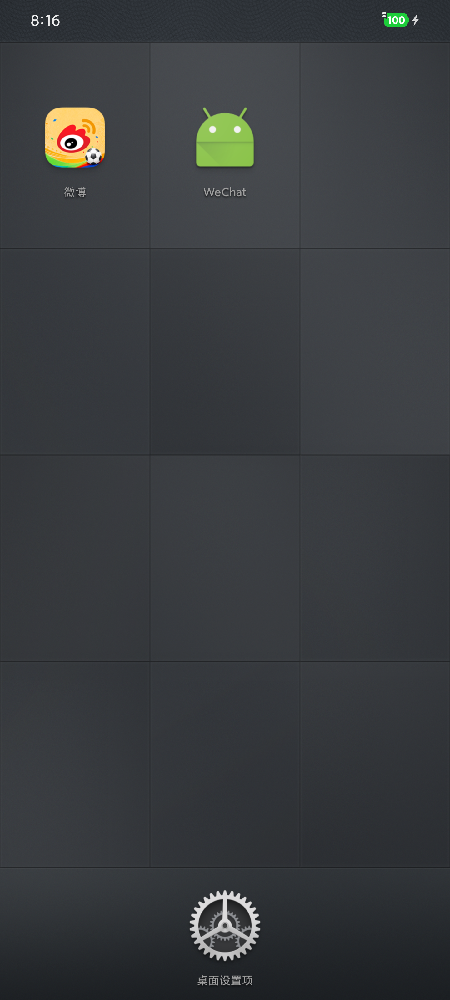
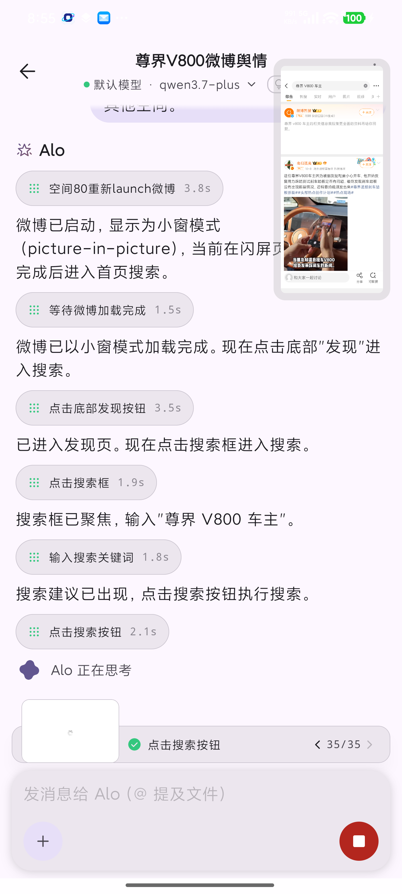
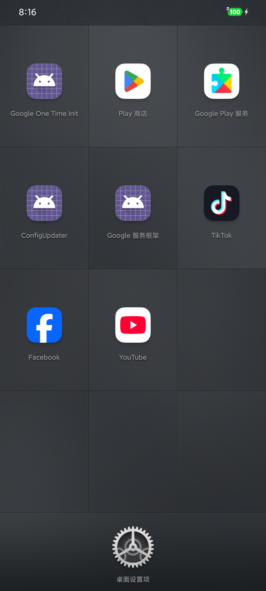
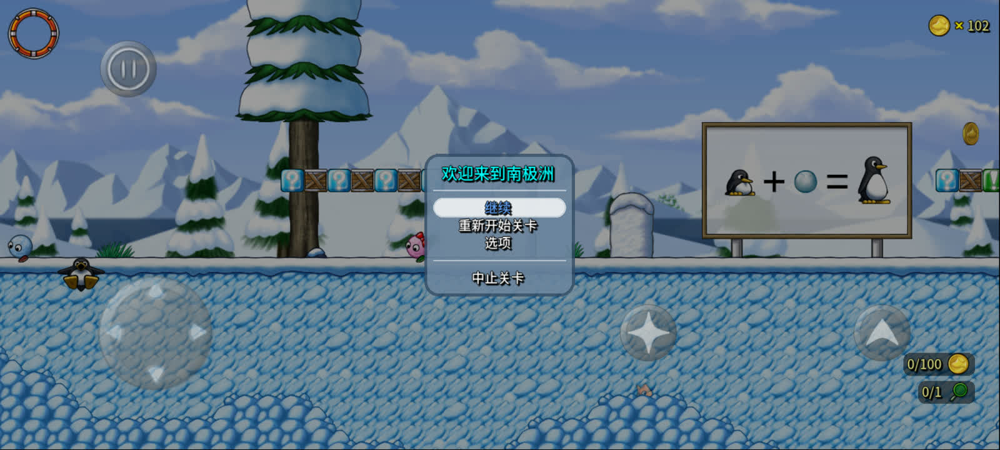
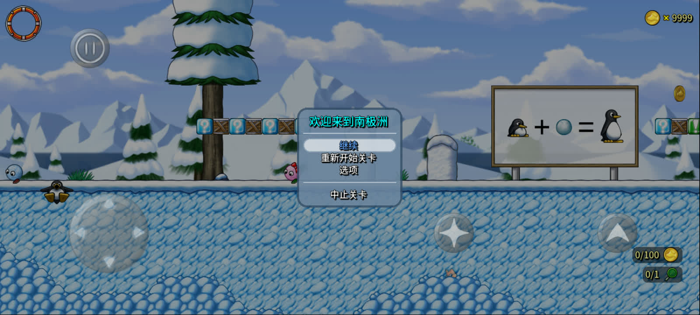

免 ROOT · ORBIT × ALO
不必换手机。
也能是 AI 手机。
不必换豆包手机，也不必换阶跃手机。
在兼容的 Android 手机上装好星轨，让阿洛帮你查、帮你点、帮你办。


APP COMPATIBILITY
178 款应用，14 个类别。
微信、抖音、京东、WPS，还有阅读、工具、医疗和出行应用。逐项查看版本和历史结果。
A DESKTOP WORTH KEEPING
喜欢锤子桌面？
在星轨里也能用。
熟悉的宫格、纹理和长按拖动。国内外应用可以放进不同空间，桌面按自己的习惯来。
海外应用桌面
Facebook、TikTok、YouTube 与 Google 应用已安装在同一个展示空间。
截图来自实际设备。已安装不代表登录、播放或全部业务通过。

ALO / ON A REAL PHONE
聊天不用关，
微博开小窗。
这是小米 12 上的实际操作。阿洛在小窗里搜索、输入和翻页，你能同时看到应用画面和它的回复。
阿洛，查查车主怎么说。
重新打开微博，搜索“尊界 V800 车主”，滚动结果并读取两条可见内容。这段操作由设备上的 Qwen 3.7 Plus 完成。
真实任务录屏 · 3 倍速节选 · 未登录账号
查看 GIF ↗网页没有连接你的设备。视频里的帖子仅用于演示操作，不代表对其说法的核实或认可。
ALO / TABLET EDITION
平板横屏，
聊天和微博一起看。
小米平板上的实际画面：左边选会话，右边看回复。阿洛在微博小窗里完成搜索、输入和滚动，不用反复切回聊天页。
本轮使用标准桌面。锤子桌面横屏和原生全屏接管仍有已知问题；截图中的安装状态也不代表全部应用业务通过。 查看本轮范围 ↗
MEET ALO
叫它阿洛就好。
阿洛能看懂页面、点击和输入，也能在几个应用之间接着做事。你想自己操作时，随时接手。
流程示意，非实时设备连接。
YOUR PHONE. MORE POSSIBILITIES.
原生运行，免 Root。
应用直接运行在手机的 Android 系统上。无需启动第二套系统，也不模拟 CPU 指令集。
保留你习惯的手机。
应用空间、阿洛操作与空间内的内存工具，无需取得 Root 权限。小窗等功能按需授权，部分显示方式需要 ADB 或无线调试。
不是虚拟机，也不是模拟器。
复用真实设备的系统与硬件，省去运行完整虚拟系统和 CPU 模拟的那一层。兼容适配仍可能产生开销，实际性能取决于应用、设备与启用的功能。
TIKTOK / NO SIM
不插卡，也能看 TikTok。
无蜂窝模块的小米平板，实际加载、切换并播放推荐视频。无需登录。
沿用设备现有网络；仍需具备可访问 TikTok 的网络条件，未验证国内直连。
想打开，还得你同意。
在应用启动和接管入口接入身份验证、时段和访问规则，可以做成独立的应用锁。这里展示的是扩展方向，尚未作为完整功能验收。
做过什么，有据可查。
已有 Agent 操作步骤、截图与网络事件记录，可继续扩展应用行为审计。统一策略、告警和审计报表仍需接入与验证。
MEMORY / ON A REAL PHONE
102 枚金币，改成 9999。
官方原版 SuperTux 0.7.0，安装到星轨后直接运行。在小米 12 Pro 上搜索实际金币变化，写入新数值，游戏界面随即显示 9999。全程免 Root。


实际设备前后截图 · Orbit Agent CLI 操作 · 非阿洛模型自主任务。仅验证本地单机金币，不涉及服务端余额；扫描范围有明确限制。
查看前后截图对照 GIF ↗ 实测说明 ↗WHAT’S INSIDE
分身之外，还有这些。
常用的应用管理和想折腾的进阶功能，都放在这里。
TRY IT WITH ALO
可以从这些事开始。
下面这些任务已有执行记录，点开验证说明能看到当时的设备和限制。
点评找餐厅，地图看路线。
把点评里的店名交给百度地图，看看怎么走，再回到商户页。
查看实测范围 ↗微博和 B 站，一起查。
搜索同一个话题，分开整理两边的结果，保留出处。
查看实测范围 ↗几个 App 同时开着。
各自保留页面。关掉其中一个，其余应用还能继续操作。
查看实测范围 ↗你想接手，直接来。
阿洛操作到一半，你可以接过来；交还后再继续。
查看实测范围 ↗不知道数值？先找变化。
在内存里按变化筛选，也可以撤销上一次筛选。
查看实测范围 ↗让阿洛改，再检查。
查找并修改数值，读回确认。需要时冻结，结束后恢复。
查看实测范围 ↗网页里的表单，也能填。
输入文字、提交、滚动列表，支持网页和原生界面。
查看实测范围 ↗一个应用卡住，别的照常。
次应用启动失败时，保留原应用的搜索页面，再单独处理。
查看实测范围 ↗接上你自己的 Agent。
通过开放接口调用应用与界面能力，接入已有工具。
查看实测范围 ↗COMPATIBILITY / FOUR DIMENSIONS
系统、应用、加固，
还有原生一致性。
能装在哪个 Android 版本，哪些应用跑过，遇到加固时表现如何，原生接口是否一致。四个维度分别验证。
版本和设备，分别列清楚。
| Android | 验证环境 | 已核对的范围 |
|---|---|---|
| 13 / API 33 | 小米 10 · 真机 | JNI 初始化、状态隔离、基础网络与定位 |
| 15 / API 35 | 小米 12 Pro · 真机 | 核心组件、Agent、内存与流量检查 |
| 16 / API 36 | 小米 17 Pro、平板 · 真机 | 基础组件；平板另有横屏与小窗实拍 |
| 17 / API 37 | ARM64 模拟器 · 4 KB / 16 KB | 应用启动、Guest native 加载与 Agent UI |
以上为不同制品的限定场景记录，模拟器与真机分列。Android 14 未纳入本次已核对档案；16 KB 验证不等于所有旧版 SO 都兼容。 详细范围 ↗
大多数样本已有启动稳定记录。
来自手机 r44 与平板 r51 的历史克隆安装测试。335 条原始记录已逐一核对校验值。当前版本的专项修复、旧版本的失败和未取得记录的样本，分别保留。
按应用名、类别和结果筛选完整目录 ↗“启动观察稳定”是原始检测标签，不代表登录、支付、长期运行或当前交付包的全功能通过。161 是跨批次并集，不是同一版本全量通过率。
按保护机制验证，不只看壳的名字。
原生代码完整性
libc / linker 文件与内存代码视图；工行、每日记有特定版本启动修复记录。
限定场景有正例ELF、JNI 与动态加载
APK 内 SO、动态库依赖与动态代码路径；按实际 APK、ABI 和页大小核对。
按样本验证直接系统调用与 procfs
覆盖常规 libc 调用之外的接口与进程视图；当前基础检测仍有 9 项差异。
仍有已知差异ART 与类加载
原调用、类加载与线程栈适配；微信有特定版本启动修复记录。
限定场景有正例多进程与信号处理
服务重建、子进程与信号语义分别验证；财联社受控崩溃重建通过不等于长期稳定。
按具体合同验证运行时自保护与防篡改
包括 Promon Shield 相关样本研究。汇丰香港、点点穿书仍有未解决场景。
未全面通过不按厂商品牌宣称“全版本加固通吃”；特定应用的启动正例不能推广到同厂商全部产品。
检测项和通过数，直接公开。
系统一致性基础检测通过
其中 Native 相关检测通过
Native 相关检查涉及文件与 FD、进程与 procfs、ART / Linker / 内存映射、CPU / ABI / 页大小，以及对象跨接口一致性。下表按同一批原始结果分组。
| 原生检测方向 | PASS | 总项数 | 其余状态 |
|---|---|---|---|
| 文件、FD 与路径 | 7 | 9 | 1 INCONCLUSIVE · 1 FAIL |
| 进程与 Procfs | 11 | 18 | 3 FAIL · 2 NOT_SUPPORTED · 2 INCONCLUSIVE |
| ART、Linker 与 Maps | 7 | 13 | 5 FAIL · 1 INCONCLUSIVE |
| CPU、ABI 与页大小 | 2 | 3 | 1 INCONCLUSIVE |
| 对象跨接口一致性 | 4 | 5 | 1 INCONCLUSIVE |
固定记录：2026-10-29，小米 12 Pro / API 35，de35bed9，Probe 1a078569。48 项是按 SYSCALL / NATIVE / LIBC / LINKER / XVIEW 检测 ID 归类的子集；不是 48 个互相独立的功能。专项历史数据另列，不与 77 项相加。
查看全部 77 项及 9 项未通过结果 ↗TikTok，不插卡也能看。
已在无蜂窝模块的小米 Wi-Fi 平板上实测：无需 SIM 卡，访客模式加载、切换并播放推荐视频。使用时仍需可访问 TikTok 的网络；未验证国内网络直连。
历史矩阵与专项结果都保留。
TAKE A CLOSER LOOK
点开，看看细节。
应用管理、Agent 和网络检查的真实界面。截图保留了当时的产品名称与语言。
SAY HELLO
有想法？聊聊。
应用适配、Agent 接入，或一起做个有意思的产品。
miioflee@gmail.com ↗